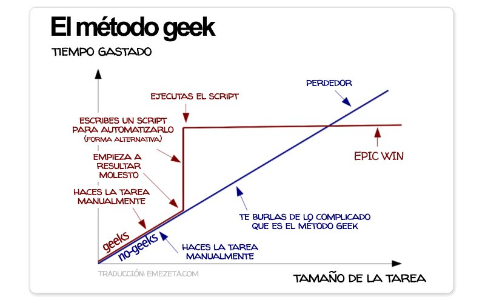

Desplegando python en AWS
Sobre mi: Héctor Alvarez
twitter: @monobotblog
email: monobot.soft@gmail.com
Backend developer en cabaanaAWS no necesita presentaciones
Es el mayor proveedor de servicios cloud actualmente
Dispone de un enorme abanico de servicios, y cada año lanza varios.
Facturó alrededor de 6.300 millones de euros en 2015


Con Python puedes crear scripts con solo unas pocas líneas de código, y obviamente mucho mas legible.
Además tener un script es menos dado a errores que escribirlo a mano, y menos aburrido (y estresante) si me preguntas.
Al ser python tienes acceso a cientos de paquetes que te hacen la vida más fácil (como logging, os, etc...).
El mismo grupo de comandos puede ejecutarse en un grupo de servidores.
Nada te impide incrustarlo en el cron de tu máquina y hacer la tarea automáticamente.
2 0 * * * ec2-user /var/.envs/cabaana/bin/fab -f /srv/django/cabaana/scripts/fab/db_backup.py dev remote_bu
¿Porqué automatizar?
Así que ...
Instalación
Con pip directamente, para python3
$ pip install fabric3
Y para python2
$ pip install fabric
O mediante repositorios (por ejemplo en Ubuntu)
$ sudo apt-get install fabric
Veamos código!!
En fabric se requiere definir variables de entorno (para configurar el script) y funciones (que son las tareas a ejecutar)
Ejemplo sencillo:
# -*- coding: utf-8 -*-
from fabric.api import run, env
from datetime import date
from os import path
today = date.today()
env.user = 'user'
env.hosts = ['9.9.9.9', '99.99.99.99', ]
env.DB_ENDPOINT = 'eu-west-1.rds.amazonaws.com'
env.DB_NAME = 'development'
def get_filepath():
filename = '{date}.sql'.format(date=today.strftime('%Y%m%d'))
return path.join('/', 'home', 'user', 'dbBackUp', '01daily', filename)
def db_backup():
run('/usr/pgsql-9.5/bin/pg_dump -U dbuser -h {EP} {NM} > {fp}'
.format(
EP=env.DB_ENDPOINT,
NM=env.DB_NAME,
fp=get_filepath(),
)
)
API
hay muchos commandos fabric, para una referencia completa ver la documentación
Los más útiles/usados son:
local
ejecutar comandos en tu máquina local
run
ejecutar comandos en máquinas remotas
* requiere saber en qué máquinas se va a ejecutar el comando.
* requires clave.
sudo
Corre el comando con privilegios de superusuario
* requiere clave
* solo para acceso remoto
* en local simplemente precedes a fabric con sudo de consola y ya lo tienes
cd / lcd
Ejecuta los siguientes comandos dentro de directorios específicos
get
Copia ficheros remotos en local
put
Copia ficheros locales en remoto
Eres un aburrido, tanto hablar y no vemos código por ningún lado!!!
Tienen razón, ¿Cómo trabajaríamos con esos comandos?
Veamos local, run y cd en acción
cd se usa dentro de una cláusula with, veamos:
def archive(foldername, filename):
# veremos una forma mas elegante de hacer ésto mas tarde
verb = run
if server_name == 'localhost':
verb = local
working_dir = '/home/monobot/sync/{foldername}'.format(
foldername=foldername
)
with cd(working_dir):
verb('mv {filename} archived/ -rf')
¡¡EH!! ¡¡espera!!, hay argumentos en esa función, ¿Cómo es posible?
Correcto, podemos pasar argumentos desde la línea de comandos asi:
$ fab archive:downloads,myfile.zip
Entiendan que los argumentos se pasan como texto, en el caso de que fueran enteros o de otro tipo tenemos que convertirlos dentro del script.
env
Es una clase que hereda de dict
env será leido por fabric para comprobar en cada momento su configuración
Es por tanto donde se definen las variables de entorno del script y configuras ciertos comportamientos específicos.
hay muchas env variables, como siempre se recomienda leerse la lista completa
env además nos sirve para poder guardar y acceder a las variables que nosotros necesitemos específicamente (como en el primer ejemplo).
las variables de entorno de env mas importantes son:
user / sudo_user
user
Donde defines quien va a ejecutar el comando, si no se define será quien esté ejecutando el script de fabric.
sudo_user
Obviamente el usuario de sudo cuando necesitemos privilegios de superusuario (y necesita existir para poder ser leido por el comando sudo).
host / hosts
host
En qué máquinas se va a ejecutar el comando (requerido por tanto por run).
hosts
Lista de máquinas donde los comandos remotos (con run por ejemplo) se van a ejecutar.
password / passwords
password
Donde se almacena la clave que se va a ejecutar ciertos comandos.
passwords
Si cada máquina remota requiere de una clave específica se deberá de configurar mediante éste diccionario.
NUNCA guarden las claves en un fichero ".py", en el caso de que se requiera meter claves es mejor guardarlas en el entorno de la máquina y leerlas desde allí.
import os
env.password = os.environ['MI_CLAVE']
sudo_password / sudo_passwords
sudo_password
Si no existe intentará utilizar la misma de password.
sudo_passwords
Al igual por si necesitas claves específicas por servidor.
shell
para definir el shell que va a ejecutar el comando, por defecto es bash.
En un momento determinado puede necesitar cambiar una variable en un momento determinado o para una tarea determinada, ese caso tenemos settings
from fabric.api import settings, run
def changing_inside(path):
with settings(warn_only=True):
return run('ls -la')
Por tanto ese comportamiento son afectará lo que ejecutemos dentro del with
Venga ya Héctor, muestranos algo de código!!!
Roger! ¿Cómo manejaríamos varias configuraciones?:
Normalmente las configuraciones se setean en tiempo de ejecución, algunas son globales para todo el módulo, otras son específicas para unos comandos determinados como vimos hace un momento, pero algunas pueden ser dependiendo del servidor al que estemos manejando
eg:
from fabric.api import env, run, local
env.user = 'user'
env.foo = 'bar'
def localhost():
env.run = local
env.DB_ENDPOINT = 'eu-west-1.rds.amazonaws.com'
env.DB_NAME = 'development'
def testing():
hosts = ['8.8.8.8']
env.run = run
env.DB_ENDPOINT = 'eu-west-2.rds.amazonaws.com'
env.DB_NAME = 'testing'
Por tanto podemos ejecutar los mismos comandos en diferentes servidores con configuraciones específicas:
$ fab -f mi_fabfile.py development db_backup
$ fab -f mi_fabfile.py testing db_backup
¿Cómo se ejecuta fabric?
Fabric va a buscar un fichero llamado fabfile.py o un módulo llamado fabfile en el directorio actual, o puedes especificar el fichero directamente.
$ fab development db_backup
$ fab -f mi_fabfile.py development db_backup
Normalmente me gusta mas definirlo explícitamente, pero depende de cada uno.
¿Cómo enviar argumentos?
Ya lo explicamos
$ fab big_task:first_arg,second_arg,third=foo,fourth=bar
Y también recuerdo que solo llegan como cadena de texto, debemos en su caso convertirlo después.
A propósito nada te impide:
$ fab -f mi_fabfile.py development db_backup production db_backup
tasks (tareas)
Dentro del fichero de fabric podemos especificar que funciones son o no tareas.
Ésto es algo relativamente nuevo en fabric, para compatibilidad se permite no definir explicitamente, pero se recomienda su uso, eso si una vez defines al menos una tarea el resto no se considera tarea.
Para ello usarmos un decorador.
¡PERO QUE PESADO!, ¿No puedes enseñar algo de código sin tener que pedirlo?
from fabric.decorators import task
@task
def foo():
run('foo')
@task(alias='bar')
def my_bar():
run('bar')
Las tareas también se pueden definir como clases que hereden de Task
En mi opinión, me parece matar moscas a cañonazos, lo interesante de Fabric es que sea simple y práctico, seguramente hay muchos casos de uso para ésto.
from fabric.api import run
from fabric.tasks import Task
class MyTask(Task):
name = "my task"
def run(self, environment, domain="whatever.com"):
run("foo")
instance = MyTask()
Y por último
Como hacer un módulo completo
debes de crear una estructura como ésta:
fabfile/
├── __init__.py
| from configuration import inv, development, localhost, production
| from foo import foo_task
| from bar import bar_task
|
├── configuration.py
| @task
| def localhost():
| inv.hosts = []
| @task
| def development():
| inv.hosts = []
| @task
| def production():
| inv.hosts = []
|
├── foo.py
| @task
| def foo_bar():
|
└── bar.py
@task
def foo_bar():
¡¡Ahora vamos a ver algo de código en vivo!!
Que no se note que tengo una chuletilla (por lo de los nervios y tal)
Ejercicio para los créditos
El script debe conectar a un servidor remoto, y guardar el arbol de directorios y ficheros del home ("~/"), en un fichero, el script debe finalmente descargar este fichero a nuestro ordenador local.
pistas: para el arbol de ficheros y directorios hay un comando de consola llamado "tree", para que la salida del comando se guarde en un fichero determinado puedes poner "tree > myfile.txt".
Enviar el script por correo a monobot.soft@gmail.com antes de un mes, con nombre completo y DNI
¡Gracias!
La guia completa la tienen disponible en: https://monobot.github.io/fabric_pyday2017/